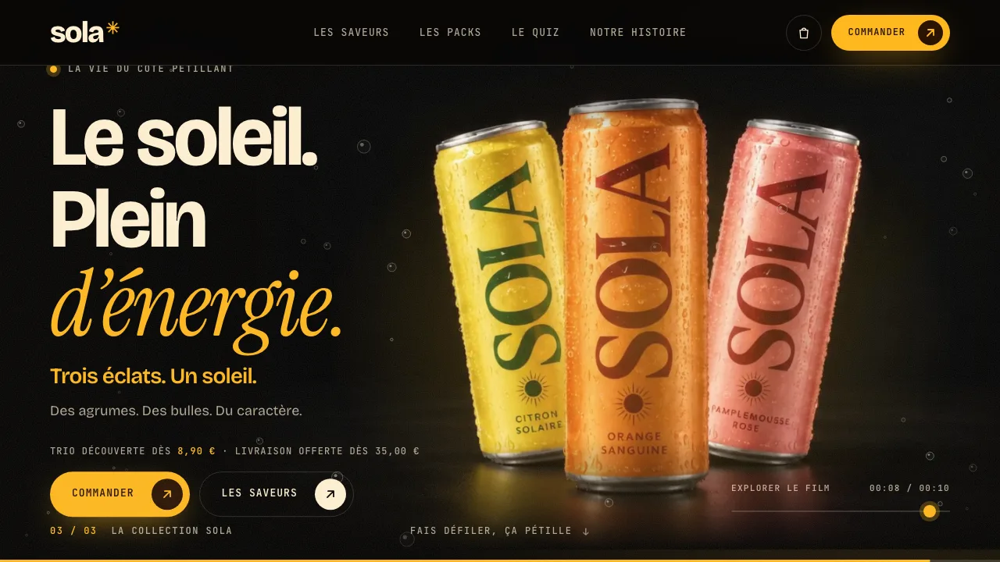
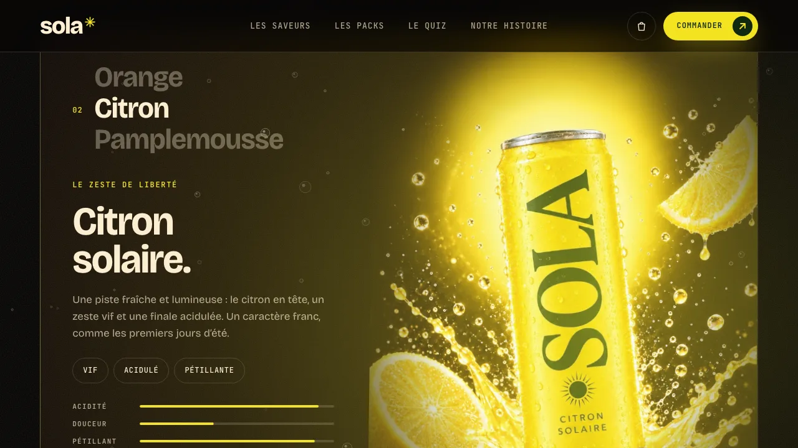
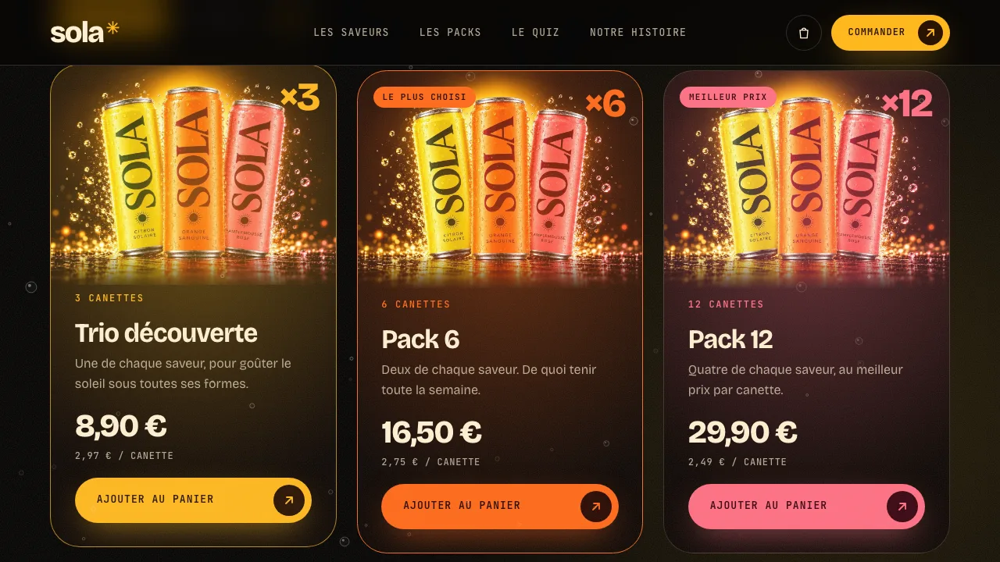
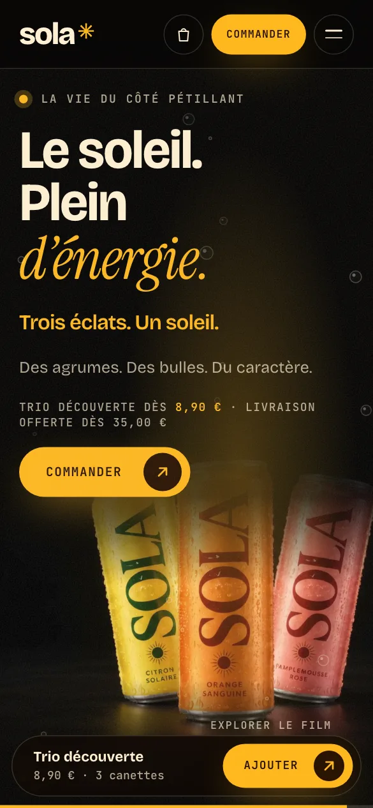
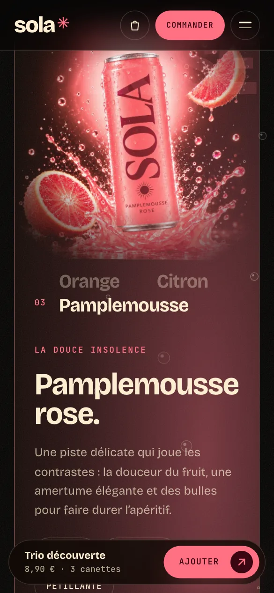
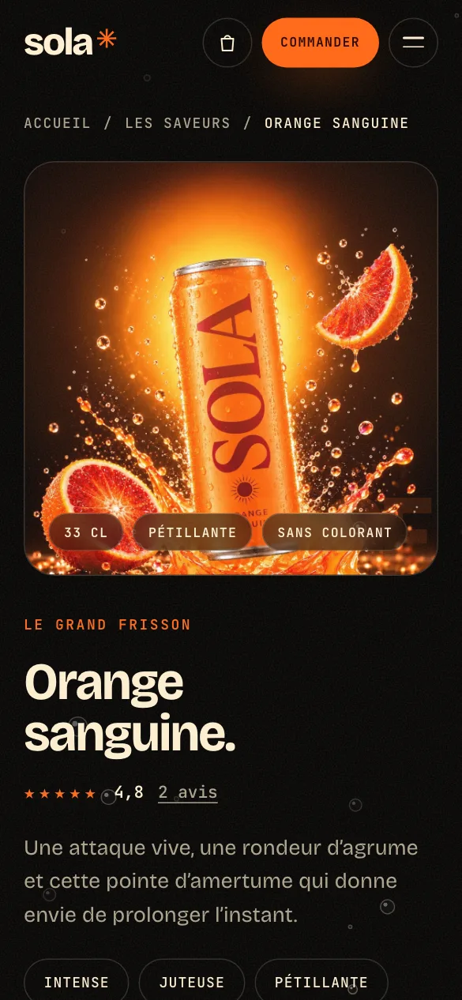

SOLA — boisson pétillante aux agrumes
Template de site pour une marque de boisson : un film piloté par le défilement, une boutique avec panier et abonnement, des fiches produit et un quiz pour trouver sa saveur.
Présentation
Conception d’un template de site pour une marque de boisson pétillante aux agrumes : une identité noire et énergique dont la couleur change avec la saveur, un film qui se déroule au défilement, des packs avec abonnement, un panier latéral, des fiches produit et un quiz « quelle saveur es-tu ». Aucun paiement ni produit réel : les prix, les avis et la marque sont illustratifs.
Objectifs
- Donner envie dès l’arrivée avec un visuel produit fort et énergique
- Présenter trois saveurs claires, avec prix et achat en un geste
- Faciliter la commande : packs, abonnement et panier sans quitter la page
Points forts
- Film piloté par le défilement et couleur de page qui suit la saveur
- Template réutilisable : prix, saveurs et textes dans un seul fichier de configuration
- Mouvement réduit respecté (accessibilité)
Captures — ordinateur



Captures — smartphone (responsive)



Ce que ce projet montre
Pour une marque de boisson, le visuel produit et l’énergie de la page donnent envie en quelques secondes. Le film qui se déroule au défilement présente les trois saveurs, les fiches et le quiz aident à choisir, et le panier avec abonnement mène à l’achat sans quitter la page. Tout le contenu (saveurs, prix, packs, avis) vient d’un seul fichier, ce qui en fait un template facile à adapter à une autre marque.
Pour votre activité
Pour un projet de ce type (marque, produit ou boutique), nos formules Starter (accueil + 4 pages) ou Pro (site vitrine de 5 à 8 pages avec animations, blog et optimisations de performance) sont les plus adaptées. Le sur-mesure se chiffre sur devis. Consultez nos tarifs et nos services, demandez un audit gratuit de votre site actuel, ou retrouvez aussi nos autres projets.